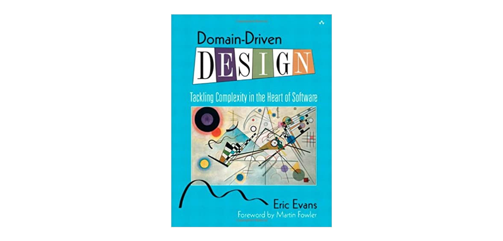
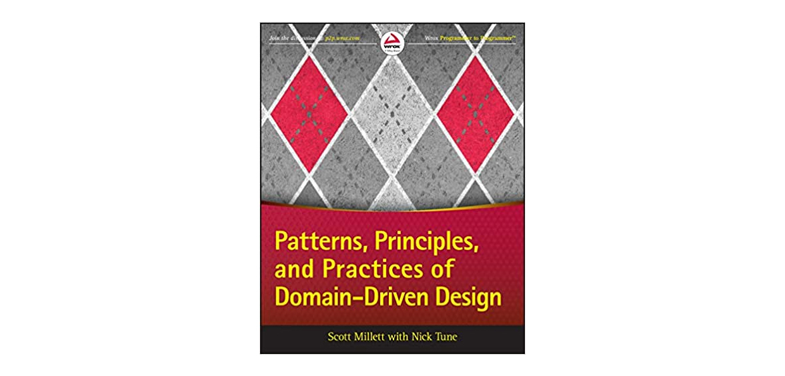
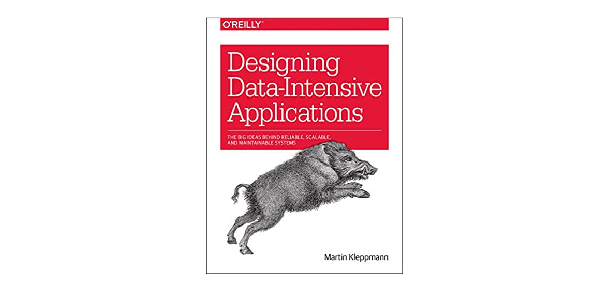
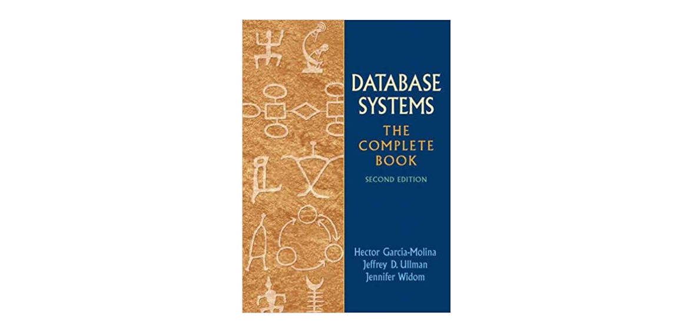
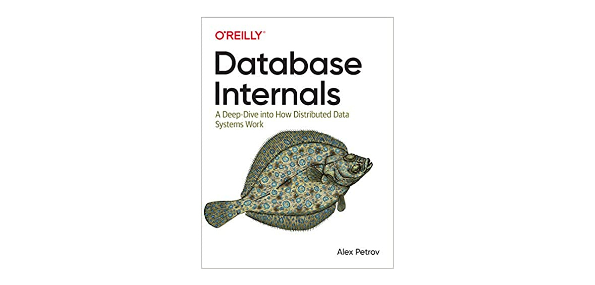
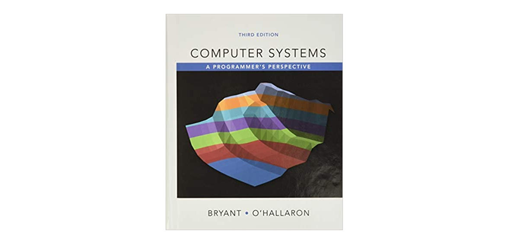
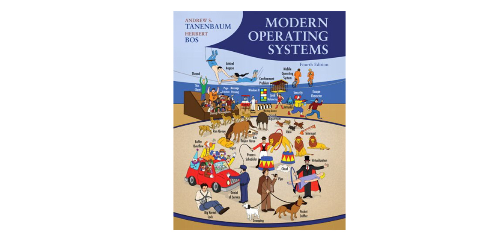
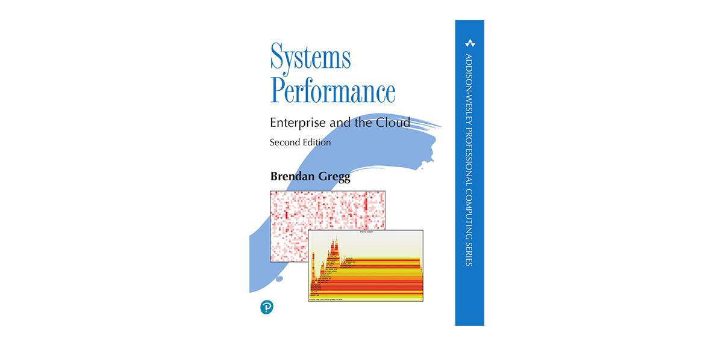
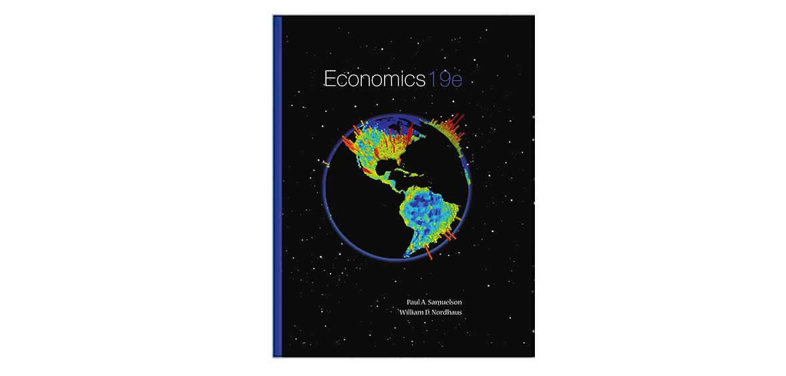
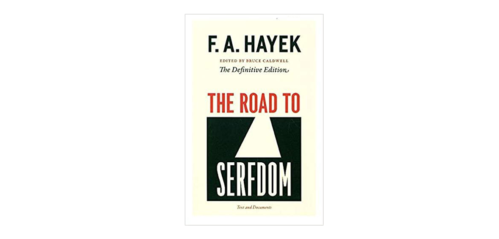

- 00 开篇词 如何成为金融级人才？.md
- 01 业务初探：扫了二维码之后发生了什么？.md
- 02 原理解读：如何理解第三方支付的业务逻辑和系统组件？.md
- 03 产品大观：不同金融业务都有哪些技术实现要点？.md
- 04 领域驱动设计（上）：如何设计金融软件顶层架构？.md
- 05 领域驱动设计（下）：如何设计统一的金融业务模型？.md
- 06 计算输入的正确性：怎么选择正确时间的数据？.md
- 07 计算过程的正确性：如何设计正确的数据处理架构？.md
- 08 计算结果的正确性：怎么保证计算结果是正确的？.md
- 09 数据传输的质量：金融业务对数据传输有什么要求？.md
- 10 数据存储的合理性：金融业务可以不用关系型数据库吗？.md
- 11 系统优化：如何让金融系统运行得更快？.md
- 12 正确性分级（上）：单机无备份有哪几种不同的一致性？.md
- 13 正确性分级（中）：多机无容灾有哪几种不同的一致性实现？.md
- 14 正确性分级（下）：多机有容灾有哪几种不同的一致性？.md
- 15 分布式正确性的存在性（上）：什么情况下不存在分布式共识算法？.md
- 16 分布式一致性（下）：怎么理解最简单的分布式一致性算法？.md
- 17 正确性案例（上）：如何实现分布式的事件溯源架构？.md
- 18 正确性案例（中）：常见分布式数据方案的设计原理是什么？.md
- 19 正确性案例（下）：如何在运行时进行数据系统的动态分库？.md
- 20 容灾（上）如何实现正确的跨机房实时容灾？.md
- 21 容灾（下）：如何通过混沌工程提高系统稳定性？.md
- 春节策划第1期 分布式金融系统知识，你掌握了多少？.md
- 春节策划第2期 读书如抽丝，为你推荐一些我读过的好书.md
- 春节策划第3期 如何运用架构知识解读春运买票和手游案例？.md
- 答疑集锦（一） 思考题解析与外汇架构知识拓展.md
- 答疑集锦（三） 思考题解析与数据库底层实现.md
- 答疑集锦（二） 思考题解析与账务系统优化.md
- 结束语 金融之道，与你同行，虽远尤欣.md
春节策划第2期 读书如抽丝，为你推荐一些我读过的好书
你好，我是任杰。
今天是春节策划的第2期。这期内容是分布式金融架构课的福利加餐。在专栏更新的过程中，有一些同学留言想要我推荐一些金融系统相关的图书，所以我为你精心梳理了一份书单，希望对你有所帮助。
选书标准
我们这个专栏讲的是分布式金融系统，因此在选书上会涉及到计算机系统、分布式系统、金融和经济。
国外在这些基础类科学的研究上有多年的沉淀，内容经历过很多版的验证，因此比较适合学习。另外从文学理论来说，翻译的过程是一个再创作的过程，会受到翻译者自身能力的限制。如果你觉得，一本中文翻译版的技术书籍没有把问题讲清楚，很难知道原作者的问题还是翻译者的问题。因此按照溯本求源的原则，这里选择的主要还是英文版的教材。
俗话说，书到用时方恨少。对于系统开发人员来说，如果是某个具体的问题，比如软件应该如何配置和使用，可以查看相关的文档，不需要看书。如果你突然发现需要看书，那么书大多情况下都不能解决当下的问题。
因此，读书要放下急功近利的想法。要把读书作为质变的手段，而不是量变的方法。质变是一个缓慢且无法自我感知的过程，要有耐心。
后面的书单我会分成技术、经济和金融三个大类给你介绍，也会附上我的简单评价和推荐理由供你参考。
推荐书目的分类以及推荐理由
技术类
领域驱动设计
领域驱动设计是Eric Evans在2000年左右提出的。《Domain-Driven Design: Tackling Complexity in the Heart of Software》这本书总结了他的一些经验。虽然内容很重要，但是他的行文思维比较跳跃，前后顺序不对，有很大的阅读难度，其实就是写得不好。

虽然Eric Evans的书没有写太好，但是领域驱动设计这个方法论实在是太过于重要了，因此后面也有不少人尝试复述内容，增加一些自己的合理理解。
Scott Millett写了一本《Patterns, Principles, and Practices of Domain-Driven Design》，算是一本近十年来写得不错的书。但是行文比较啰嗦，你需要有一些耐心，知道哪些内容可以跳过。

数据系统
数据系统的教材首推Martin Kleppmann的《Designing Data-Intensive Applications: The Big Ideas Behind Reliable, Scalable, and Maintainable Systems》。作者有很强的理论和实践知识，在这本书里总结了几乎所有我们应该了解的知识点。
由于这本书的厚度有限，很多重要的知识点只能点一下名，你需要根据每个章节后面的论文列表来进一步学习。这本书有中文翻译版，但是有中文翻译书籍的常见问题，如果你想真正了解知识，我还是建议看英文版。

数据系统，肯定少不了数据库的内容。数据库有很多介绍怎么使用的教材，但是很少有介绍系统架构的教材。Hector Garcia-Molina的《Database Systems: The Complete Book》是为数不多的一本介绍数据库系统架构的书。
书里对事务和锁的实现介绍得极其详尽，浅显易懂。这本书的第二作者Jeffrey Ullman是计算机领域的传奇人物，也是书质量的一个保证。这本书的问题在于书里介绍了大量的XML处理。XML是上一个风口，现在已经被JSON取代，因此书的重点不一定是现在的重点。需要提醒一下，这本书特别难买。-

有关数据库的实现，现在有了一本新的书，Alex Petrov写的《Database Internals: A Deep Dive into How Distributed Data Systems Work》。
有意思的是，这本书的名字虽然写的是分布式系统，但是书里写的单机版内容比分布式内容要好，分布式内容介绍得比较凌乱，重点分散。你可以当作是《Designing Data-Intensive Applications》的一个补充。

优化
系统架构优化得好不好，取决于你对整个系统了解得是否全面。我们按照从宏观到微观的顺序介绍一下经典教材。
这里介绍一本唯一的中文书，李智慧的《大型网站技术架构 核心原理与案例分析》。这本书对互联网架构的各个方面进行了点到为止的介绍。
内容不深，但是很全面，能让你清楚地知道都会出现哪些问题，会有哪些解法。知道了问题和解法，之后就可以按图索骥，按照关键字查询细节了。
接下来，再让我们看看介绍单个计算机的教材。
Randal Bryant的《Computer Systems: A Programmer’s Perspective》是一本经典教材。这本书按照从硬件到软件的顺序介绍了整个计算机系统。从这本书里，你会学到如何设计一块有流水线的CPU，怎么实现编译器和操作系统，以及怎么让计算机动起来。内容很浅，但是很全。

介绍完了计算机，接下来我们就要仔细了解所有软件打交道最多的东西了，它就是操作系统。操作系统有很多教材，不过按照流行度和全面度来说，我比较推荐Andrew Tanenbaum的《Modern Operating Systems》。这本书不用过多介绍。

最后介绍一本关于性能监控和调优的书，Brendan Gregg的《Systems Performance》。作者发明了系统调优的火焰图，还是Solaris操作系统早期监控工具的发明人。
这本书列举了几乎所有的监控工具，能够极其全面地让你看到计算机CPU、内存、硬盘、文件系统、网络和云计算环境当前处于什么情况，以及应该如何对系统性能进行调整。重点的要说三遍，极其全面，极其全面，极其全面。

经济类
经济类教材入门教材首推曼昆的《经济学原理》。曼昆年少成名，担任过美国经济顾问委员会主席。他写书浅显易懂，但是比较啰嗦。在书中他强调自己是中立态度，不偏向某个学派，但是行文之间依然有所倾向。最新版是2020年的第9版。
相对少见一些的是保罗·萨缪尔森的《经济学》。萨缪尔森是凯恩斯主义的代表人物之一，获得过诺贝尔经济学奖。他于2009年辞世，因此教材停留在第19版。

另外，微观经济学有一本书我也想推荐给你。Hal Varian写的《Intermediate Microeconomics: A Modern Approach》。Varian是Google的首席经济学家，主导了公司的拍卖流程，是经济学家弃笔从戎的一个成功案例。
最后我再推荐一本科普读物，哈耶克的《通往奴役之路》。哈耶克是奥地利学派的代表人物之一，也获得过诺贝尔经济学奖。他的《通往奴役之路》有很多争论，请你酌情选择。

金融类
金融类有用的教材其实不多，原因是比较实用的不是教材，而是考试材料。对于大多数人来说，他们的金融生涯需要掌握的是如何完成金融过程，而不是设计顶层的金融体系，所以理论帮助有限。
考试内容比较全面的是CFA。CFA以股票为主，分析股票以基本面为主，因此可能和一些实际情况有所出入。CFA也介绍了一些其他金融资产的知识，但是和现状相差较远，不能学以致用。虽然有各种不足，但CFA对于立志于跨行业的人来说是一个不错的敲门砖。
金融学有一本教材写得还不错，是Mishkin的《Economics of Money, Banking and Financial Markets》。作者在2008年金融危机中被人诟病，但是他丝毫没有受到影响。这本教材从稍微学术一点的角度介绍和分析了各种金融市场，数据翔实，是一本不可多得的好书。
好了，以上就是书单的全部内容了。关于金融系统或者金融方面的内容，你有什么正在阅读或者计划阅读的书呢？欢迎你在留言区分享出来，我们一起交流、进步。
© 2019 - 2023 Liangliang Lee. Powered by gin and hexo-theme-book.